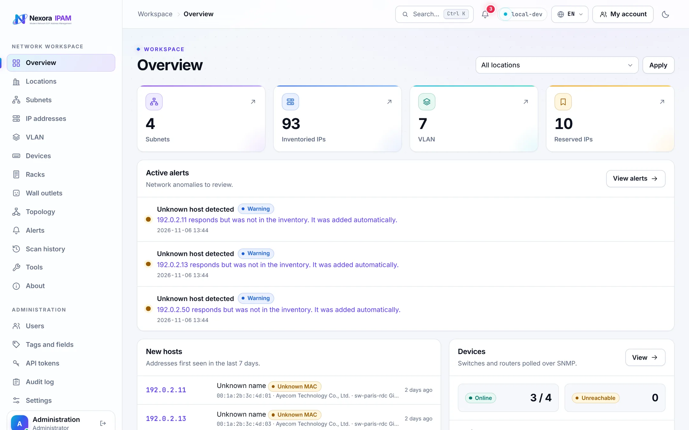
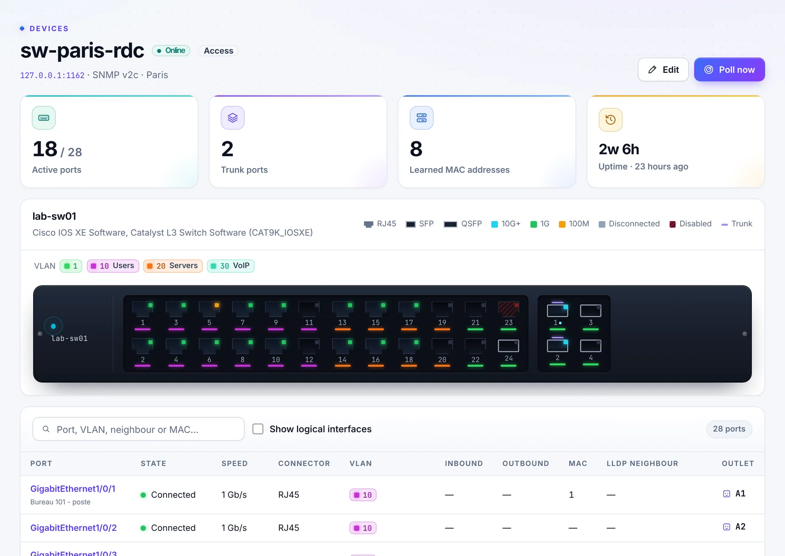
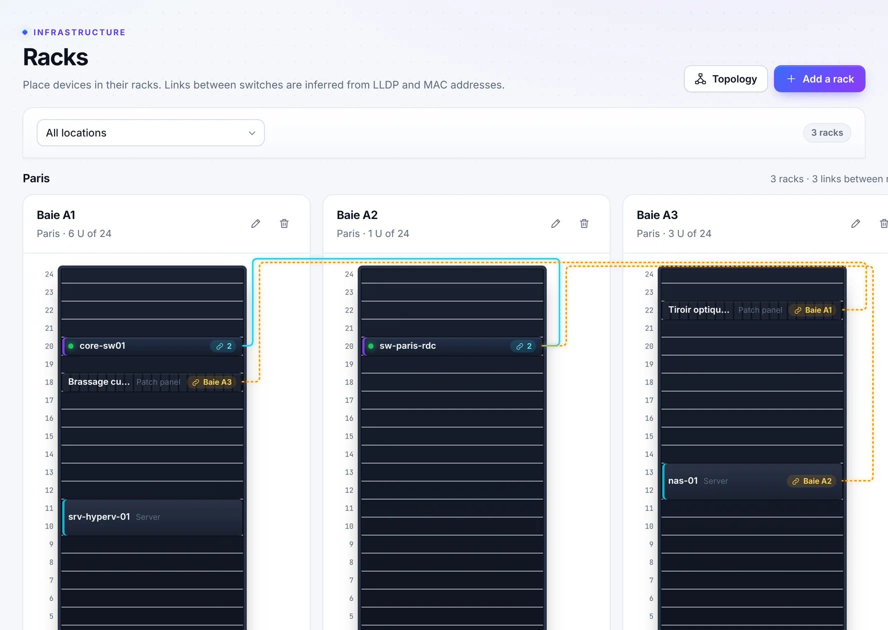
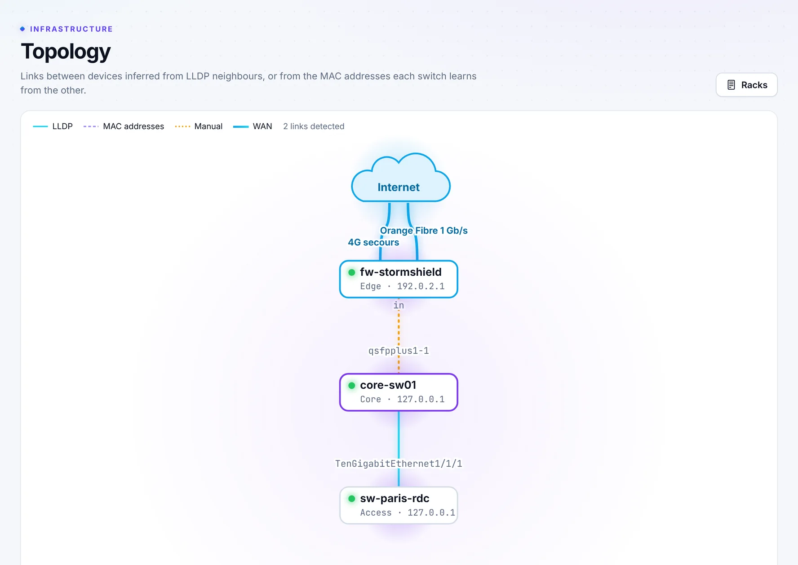
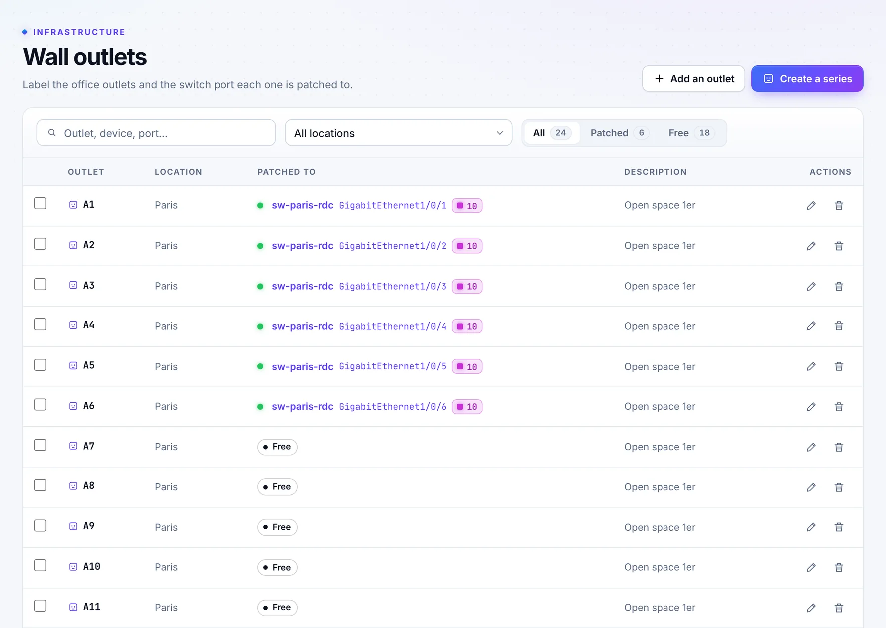
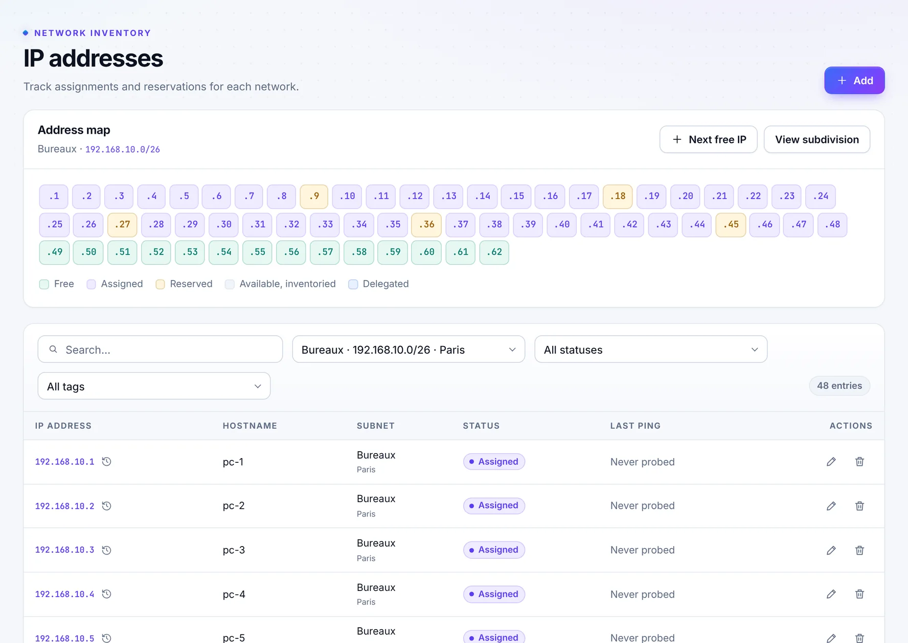

Subnets and address map
IPv4 and IPv6 subnets by location, an interactive address map with gateway and DHCP pool, splitting and delegation.
NexoraIPAM keeps your subnets, IP addresses and VLANs in one place. It discovers hosts, draws your switches over SNMP and maps your racks, cables and topology all the way to the Internet. Every change is recorded in an audit log.

From the address plan down to the wall outlet in an office, and up to the line that leads to the Internet.
IPv4 and IPv6 subnets by location, an interactive address map with gateway and DHCP pool, splitting and delegation.
One click, or one API call, reserves the next free address while skipping the gateway, the DHCP pool and delegated blocks.
ICMP discovery on a schedule, host names from DNS, DHCP, NetBIOS, mDNS and LLDP, plus a timeline of every MAC address seen.
RJ45, SFP and QSFP ports with link state, speed, VLANs, throughput, learned MACs and LLDP neighbours, across vendors.
Place devices unit by unit, line racks up per room and see the cables between them, detected or documented by hand.
A layered map from the Internet down: WAN links, edge firewalls, core, distribution and access switches.
Create A1 to A24 in one go, patch each outlet to a switch port and find any of them from the search bar.
Full subnets, unknown hosts, MAC changes, hosts that go silent and unreachable devices, by e-mail if you want.
Roles, TOTP two-factor sign-in, LDAP and OpenID Connect, and every change recorded with its author and before/after values.
NexoraIPAM polls your switches and routers with standard MIBs and draws their front panel. Click a port to see who is plugged in.

Racks of the same room stand side by side. Links found by LLDP or MAC tables run through a cable tray, next to the patch cords and fibres you document yourself.

Mark the ports that lead to your carriers as WAN, give your firewall the edge role, and the topology arranges itself in layers.

Create a whole series of outlets per location, then patch each one to a switch port, from the outlet list or straight from the port.

Free, assigned and reserved addresses, the gateway and the DHCP pool on one grid, with tags, custom fields and the full history of each IP.

.env fileAn application key, the public URL and a database password.admin@example.com.# In a new directory, next to compose.yaml from the repository
printf 'APP_KEY=base64:%s\nAPP_URL=%s\nDB_PASSWORD=%s\n' \
"$(openssl rand -base64 32)" https://ipam.example.com \
"$(openssl rand -hex 24)" > .env
docker compose up -d
docker compose logs nexora # temporary administrator passwordprintf 'APP_KEY=base64:%s\nAPP_URL=%s\n' \
"$(openssl rand -base64 32)" https://ipam.example.com > .env
docker volume create nexora-data
docker run -d --name nexora --env-file .env \
-v nexora-data:/var/lib/nexora -p 8080:8080 \
ghcr.io/pokertour/nexoraipam:latest
docker logs nexora # temporary administrator passwordThe worker probes your networks from the container, so it must be able to reach them. All options are in the README.
# Reserve the next free address of a subnet from a deployment
curl -X POST \
-H "Authorization: Bearer $NEXORA_TOKEN" \
-H "Accept: application/json" \
-d hostname=web-03 \
https://ipam.example.com/api/v1/subnets/12/next-freeA versioned JSON API for subnets, addresses, VLANs, locations and devices. Administrators issue read-only or read-write tokens, and every change made with a token is recorded in the audit log under its name.
One container, your own server, your data. Try NexoraIPAM on a test subnet and see your switches light up.